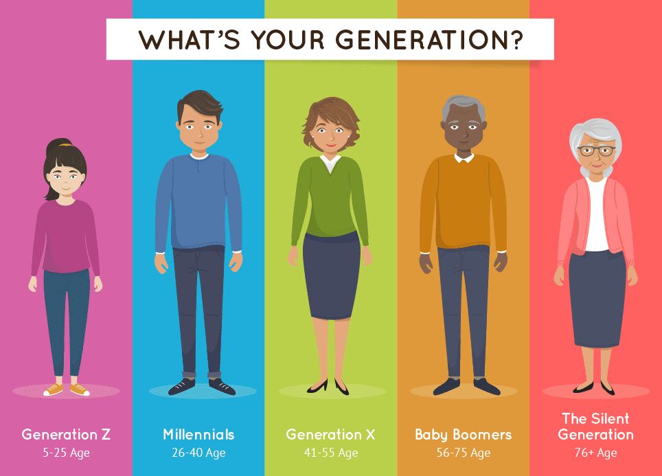

<ion-header [translucent]="true">
  <ion-toolbar>
    <button [routerLink]="['../home']" class="icon-home"><ion-icon name="home-outline"></ion-icon></button>
  </ion-toolbar>
</ion-header>

<ion-content [fullscreen]="true">
  <ion-card *ngIf="!mostraredad">
    
    <ion-card-header>
      <ion-card-title>Predecir Edad</ion-card-title>
    </ion-card-header>
    <ion-card-content>
      Con esta herramiena vamos a tratar de predecir tu edad dependiendo del nombre que nos proporciones en el campo de abajo.
    </ion-card-content>
    <ion-item>
      <input [(ngModel)]="nombre" class="input-nombre" placeholder="Ingrese un nombre" type="text"/>
    </ion-item>
    <ion-item>
      <button class="btnEdad" (click)="PredecirEdad()">Predecir edad</button>
    </ion-item>
  </ion-card>

  <ion-card *ngIf="mostraredad">
    
    <ion-card-header>
      <ion-card-title>{{edad}} Años ({{desarrollo}})</ion-card-title>
    </ion-card-header>
    <ion-card-content>
    </ion-card-content>
    <ion-item>
      <input [(ngModel)]="nombre" class="input-nombre" placeholder="Ingrese un nombre" type="text"/>
    </ion-item>
    <ion-item>
      <button class="btnEdad" (click)="PredecirEdad()">Predecir edad</button>
    </ion-item>
  </ion-card>
</ion-content>
